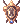
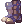
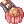
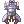

Aki's PvP Devotion Royal Guard Guide
WORK IN PROGRESS
| Royal Guard | |
|---|---|
| Job Base: | Swordsman |
| Written By: | Aki |
Overview
Hello, Aki here, also known as Eiwaz in game. Devo RG has been my main in WoE for around 2 years and my most recent WoE guild is Dusk. While playing RG in BG casually, I have also achieved a 2nd runner-up in GH with my team. I hope everyone who is reading could discover the fun of PvP RG!
This guide is written to help everyone to get into PvP side of RO as a devo RG more easily. However, PvP depends a lot on personal preference, playstyles or meta, it would serve better as a starting point. Please bear in mind that this guide may not be most objective since I can only provide my own insight about the job in PvP(mainly in WoE and BG environments).
If there is any question, you can reach me in Discord via DM (♪ Aki ♪#8382) or just ping me in NovaRO server (#pvp channel).
Why Playing This Job?
Devotion Royal Guards are commonly seen in different siege modes and they are very crucial supports in the team to help protecting the DPS players. Due to the high demand, it is relatively easy even for devo RG newbies to get a slot in WoE guilds or getting picked by captains in early stage in Draft WoE, not like DPS that requires MVPs or minmaxed gears. It is a very good position to learn about PvP from zero as well, because it is taking damage indirectly and have less interactions with enemy players than DPS or front line (FL) jobs. You do not need to know much about other jobs before participating in PvP and you can take your time to focus on improving your own gameplay.
PvP and PvM devo RGs share similar gameplays, main gears and stats, it is easier and more budget friendly to transit to PvP if you have already built a devo RG in PvM. You just need to adjust some small details according to different game mechanics and you will be ready to go!
Stats
- STR - ~100, for weight capacity mainly, masq resistance and reduce vacuum extreme duration.
- AGI - ~80, for masq resistance and a bit of ASPD.
- VIT - 120, you can even go for 130 by reducing other stats.
- INT - ~90, for VCT reduction and Prestige chance.
- DEX - 120 is a must if you use Temporal Dex Boots, and for VCT reduction and Strip Accessories resistance.
- LUK - ~70, for Prestige chance and Mandragora Howling resistance.
Gears & Cards
For Devo
(Table 1)
For Prestige
(Table 2)
For Full Resist
Demihuman Reduction
- You can get up to 86% Demihuman reduction from WoE Plate Set, or 85% from WoE Suit Set.
- -Pros:
- Provides highest reduction.
- -Cons:
- Spends more weight capacity.
- Easier to mess up with Alt+D or @swap after getting masq'd or stripped by enemy Shadow Chasers.
| Gears | ||||
|---|---|---|---|---|
| Items | Types | Acquisition | Effects | |
 Defensive Cat Ear Beret [1] Defensive Cat Ear Beret [1]
|
Top Headgear | MDEF +1
For each refine +6 or higher (capped at +9):
| ||
| Defensive Red Pom Band [1] | MDEF +1
For each refine +6 or higher (capped at +9):
| |||
 Challenger's Blindfold Challenger's Blindfold
|
Middle Headgear |
General Sotaro in @go woe |
Reduces damage received from demi-human race enemies by 5% | |
 Handkerchief In Mouth Handkerchief In Mouth
|
Lower Headgear |
General Sotaro in @go woe |
Reduces damage received from demi-human race enemies by 3% | |
 WoE Plate [1] WoE Plate [1]
|
Armor |
Battlegrounds ( 2000 Valor Badges)
|
*Stats during WoE & PVP
MDEF +5
| |
 WoE Suits [1] WoE Suits [1]
|
*Stats during WoE & PVP
MDEF +10
| |||
 Combat Knife Combat Knife
|
Weapon |
Increases physical damage on demi-human race targets by 10%
| ||
 Purified Knight's Shield [1] Purified Knight's Shield [1]
|
Shield | Increases attack speed (reduces delay after attack by 10%)
Atk + 5%, Matk + 5%
| ||
 Valkyrja's Shield [1] Valkyrja's Shield [1]
|
Adds 20% resistance to Water, Fire, Undead and Shadow properties
MDEF +5 | |||
 Thara Frog Card Thara Frog Card
|
Shield Card |
Reduces damage received from demi-human race enemies by 30% | ||
 WoE Manteau [1] WoE Manteau [1]
|
Garment |
Battlegrounds ( 600 Valor Badges)
|
*Stats during WoE & PVP
MDEF +1
| |
 WoE Greave [1] WoE Greave [1]
|
Shoes |
Battlegrounds ( 800 Valor Badges)
|
*Stats during WoE & PVP
MDEF +1
| |
|  WoE Boots [1] | *Stats during WoE & PVP
MDEF +5
| |||
 Physical Enhancer Ring [1] Physical Enhancer Ring [1]
|
Accessory |
ATK +5%
| ||
 Magic Intensifier Ring [1] Magic Intensifier Ring [1]
|
MATK +5%
| |||
 Sea Otter Mini Fan [1] Sea Otter Mini Fan [1]
|
All Stats +1
| |||
 Automatic Booster R [1] Automatic Booster R [1]
|
Atk + 5%, MaxHP + 5%
| |||
 King Schmidt's Rigid Insignia [1] King Schmidt's Rigid Insignia [1]
|
MaxHP + 10%
| |||
 Warlord's Shadow Shield Warlord's Shadow Shield
|
Shadow Shield |
Siege Merchant in @go woe |
Reduces damage taken from demi-human enemies by 1%
| |

Medium Reduction
- You can get up to 80% Medium reduction.
- -Pros:
- Some gears can be used in your devo set.
- -Cons:
- Provides less reduction than Demihuman set.
| Gears | ||||
|---|---|---|---|---|
| Items | Types | Acquisition | Effects | |
 Divine Guard's Helm [1] Divine Guard's Helm [1]
|
Top Headgear | Summer Concert | Reduce damage received by monsters of all sizes by 5%
If upgraded to +7 or higher, cast [ Heal ] Lv.5 at a 1% chance on yourself when you get physically attacked
| |
 King Schmidt's Suit [1] King Schmidt's Suit [1]
|
Armor | Fall of Glast Heim | This armor cannot be destroyed during battle
Can be enchanted at Fall of Glast Heim with any element (except ghost) and stats bonus
| |
 Furious Ice Titan Card Furious Ice Titan Card
|
Armor Card | When equipped with Furious Snowier Card, reduces damage taken from medium size monsters by 20% | ||
| Blocking Spear [2] | Weapon | Einbech Dungeon 3 | Reduces damage taken from all size enemies by 3% when equipped with Einbech Accesories
If refine rate is 7 or higher, Atk + 40, increases attack speed (reduces delay after attack by 10%)
| |
 White Knight Card White Knight Card
|
Weapon Card | When equipped with Khalitzburg Knight Card, receive 5% less damage from medium and large size monsters | ||
 Mutated White Knight Card Mutated White Knight Card
|
When equipped with Mutated Khalitzburg Card, receive 5% less damage from medium and large size monsters | |||
| Purified Knight's Shield [1]
|
Shield | Increases attack speed (reduces delay after attack by 10%)
Atk + 5%, Matk + 5%
| ||
| Valkyrja's Shield [1]
|
Adds 20% resistance to Water, Fire, Undead and Shadow properties
MDEF +5 | |||
 Khalitzburg Knight Card Khalitzburg Knight Card
|
Shield Card | Def + 10
Receives 25% less damage from medium and large size monsters | ||
 Mutated Khalitzburg Card Mutated Khalitzburg Card
|
Mdef + 10
Receives 25% less damage from medium and large size monsters | |||
Illusion Engine Wing  A-type [1] or A-type [1] or  B-type [1] B-type [1]
|
Garment | Illusion Equipments and Enchants (17.1) | The budget version of the Automatic Engines Wings
| |
Automatic Engine Wing  A-type [1] or A-type [1] or  B-type [1] B-type [1]
|
Automatic Equipments and Enchants (17.2) | With  Automatic Module (Above All) enchant: Automatic Module (Above All) enchant:
Reduces physical and magical damage taken from normal and boss enemies by 7%.
| ||
Safety Pendant  R [1] or B [1] R [1] or B [1]
|
Accessory | Must be combined with the Einbech Epaulet and Weapon to receive the resistance bonus | ||
| Safety Epaulet  R [1] or  B [1] B [1]
|
Must be combined with the Einbech Pendant and Weapon to receive the resistance bonus | |||
 Furious Snowier Card Furious Snowier Card
|
Accessory Card |
When equipped with Furious Ice Titan Card, reduce damage taken from medium size monsters by 20% | ||
|  Warlord's Shadow Mail | Shadow Armor |
Siege Merchant in @go woe |
Reduces damage taken from Medium size monsters by 2%
Refine Level +7:
| |

Cards
(Table 4)
Shadow Gears
(Table 5)
Other Swaps
(Table 6)
Skills
WoE
This is an example skill tree that I have been using, you can change it as you prefer.


BG
(SS2)
Preparations
GRF
- Force Render
Hotkeys
Below are examples of my own hotkeys.
Main page for WoE:
Sub page for consumables/specific skills & items:


Macros & Party UI
(SS5+6)
Restocks
WoE
(Table 7)
BG
(Table 8)
NovaExt
- Turbo
- Timers
- /circle
- /box
WoE Gameplays
Main Objectives
Bonus Supporting
- Trample
- Earth Drive
- Cancelling Ecalls
Buffs
- Sacrament if needed
- Alts: Golem Soul, Full Chemical Protection
Against Debuffs
- Lauda
- Dispel
- Clearance
- Gospel
BG Gameplay
Special Mechanics
- Sothis Shield
- Freedom
Deciding Devo Targets
- DPS
- GC
KvM
Guardian Battle
Stone Control
- People who are carrying the stones
Triple Inferno
- Hand in skulls when you kill through reflects
Conquest
- mini WoE
Further Improvements
Recordings
- Recording with In Game Replay function (.rrf)
Pros: more stable fps, can upload .rrf to divine pride for more details Cons: need to record the .rrf again to adjust the timeline for easier replays, cant see the exact action you took
- Recording with OBS or other softwares
Pros: Records your cursor movements and all action you took, easy replays and editing Cons: May affect fps
Player Feedback & Advice
- Devo targets
- Experienced Players
- DPSs
- Sorcs
- Fellow RGs